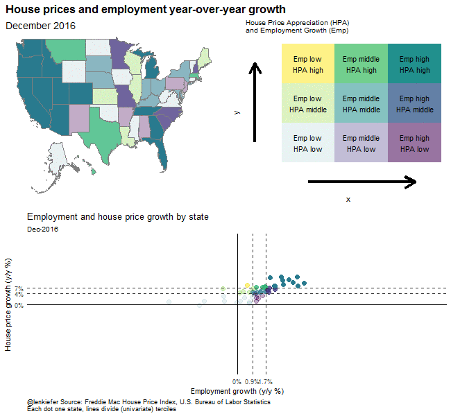

IN THIS POST I WANT TO EXTEND ON yesterday’s post and build an animated bivariate choropleth.
We’ll use the same data as yesterday and create a combined scatterplot with bivariate choropleth map and animate it with R.
Let’s get right to it.
Load data
We’ll follow from yesterday and load our data and do some manipulations.
In order for this to work we’ll need data from three sources:
- House Price Index Data in a .txt file: fmhpi2016q4.txt
- Regional lookup table in a .txt file: region.txt
- Employment data from BLS.gov
################################################################################
### Load libraries
################################################################################
library(tidyverse)## Loading tidyverse: ggplot2
## Loading tidyverse: tibble
## Loading tidyverse: tidyr
## Loading tidyverse: readr
## Loading tidyverse: purrr
## Loading tidyverse: dplyr## Conflicts with tidy packages ----------------------------------------------## filter(): dplyr, stats
## lag(): dplyr, statslibrary(data.table)##
## Attaching package: 'data.table'## The following objects are masked from 'package:dplyr':
##
## between, first, last## The following object is masked from 'package:purrr':
##
## transposelibrary(viridis)## Loading required package: viridisLitelibrary(maps)##
## Attaching package: 'maps'## The following object is masked from 'package:purrr':
##
## maplibrary(tweenr)
library(animation)
library(ggalt)
library(rgeos)## rgeos version: 0.3-23, (SVN revision 546)
## GEOS runtime version: 3.5.0-CAPI-1.9.0 r4084
## Linking to sp version: 1.2-5
## Polygon checking: TRUElibrary(maptools)## Loading required package: sp## Checking rgeos availability: TRUElibrary(albersusa)
library(scales)##
## Attaching package: 'scales'## The following object is masked from 'package:purrr':
##
## discard## The following object is masked from 'package:readr':
##
## col_factorlibrary(ggthemes)
# We'll need the multiplot function for multiple graphs on the same page
# via: http://www.cookbook-r.com/Graphs/Multiple_graphs_on_one_page_(ggplot2)/
source("code/multiplot.R")
################################################################################
### Load house price data
################################################################################
dm<-fread("data/fmhpi2016q4.txt")
dm$date<-as.Date(dm$date, format="%m/%d/%Y")
################################################################################
### Go get data from BLS.gov
################################################################################
emp.data<-fread("https://download.bls.gov/pub/time.series/sm/sm.data.54.TotalNonFarm.All")## Warning in fread("https://download.bls.gov/pub/time.series/sm/sm.data.
## 54.TotalNonFarm.All"): Bumped column 4 to type character on data row
## 521667, field contains '-'. Coercing previously read values in this
## column from logical, integer or numeric back to character which may not
## be lossless; e.g., if '00' and '000' occurred before they will now be just
## '0', and there may be inconsistencies with treatment of ',,' and ',NA,' too
## (if they occurred in this column before the bump). If this matters please
## rerun and set 'colClasses' to 'character' for this column. Please note that
## column type detection uses a sample of 1,000 rows (100 rows at 10 points)
## so hopefully this message should be very rare. If reporting to datatable-
## help, please rerun and include the output from verbose=TRUE.emp.series<-fread("https://download.bls.gov/pub/time.series/sm/sm.series")
emp.list<-emp.series[industry_code==0 # get all employment
& data_type_code==1 # get employment in thousands
& seasonal=="S",] # get seasonally adjusted data]
emp.area<-fread("https://download.bls.gov/pub/time.series/sm/sm.area",
col.names=c("area_code","area_name","drop"))[,c("area_code","area_name"),with=F]## Warning in fread("https://download.bls.gov/pub/time.series/sm/sm.area", :
## Starting data input on line 2 and discarding line 1 because it has too few
## or too many items to be column names or data: area_code area_nameemp.st<-fread("https://download.bls.gov/pub/time.series/sm/sm.state",
col.names=c("state_code","state_name","drop"))[,c("state_code","state_name"),with=F]## Warning in fread("https://download.bls.gov/pub/time.series/sm/sm.state", :
## Starting data input on line 2 and discarding line 1 because it has too few
## or too many items to be column names or data: state_code state_name# merge data
emp.dt<-merge(emp.data,emp.list,by="series_id",all.y=T)
#create month variable
emp.dt=emp.dt[,month:=as.numeric(substr(emp.dt$period,2,3))]
# (this assignment is to get around knitr/data table printing error)
# see e.g. http://stackoverflow.com/questions/15267018/knitr-gets-tricked-by-data-table-assignment
# M13 = Annual average, drop it:
emp.dt<-emp.dt[month<13,]
#create date variable
emp.dt$date<- as.Date(ISOdate(emp.dt$year,emp.dt$month,1) )
# merge on area and state codes
emp.dt<-merge(emp.dt,emp.area,by="area_code")
emp.dt<-merge(emp.dt,emp.st,by="state_code")
emp.dt=emp.dt[,c("state_name","area_name","date","year","month","value"),with=F]
emp.dt=emp.dt[,emp:=as.numeric(value)] #convert value to numeric
# Compute year-over-year change in employment and year-over-year percent change
emp.dt=emp.dt[,emp.yoy:=emp-shift(emp,12,fill=NA),by=c("area_name","state_name")]
# Percent change by year:
emp.dt=emp.dt[,emp.pc:=(emp-shift(emp,12,fill=NA))/shift(emp,12,fill=NA),by=c("area_name","state_name")]
emp.dt=emp.dt[,type:=ifelse(area_name=="Statewide","State","Metro")]
# drop states in c("Puerto Rico","Virgin Islands")
emp.dt=emp.dt[!(state_name %in% c("Puerto Rico","Virgin Islands")),]
# only keep state data
emp.dt.state<-emp.dt[area_name=="Statewide"]
emp.dt.state<-rename(emp.dt.state,statename=state_name)
################################################################################
# get a region lookup table and merge
################################################################################
region<-fread("data/region.txt")
emp.dt.state<-left_join(emp.dt.state,
region[,c("statecode","statename"),with=F],
by="statename")
# rename some things
emp.dt.state<-rename(emp.dt.state,state=statecode)
emp.dt.state$state<-as.character(emp.dt.state$state)
# Rename state_name as statename in emp.dt.state data
emp.dt.state<-rename(emp.dt.state,state_name=statename)
################################################################################
################ Merge these data! #############################################
################################################################################
dt<-merge(dm,emp.dt.state[,c("date","state","state_name","emp","emp.yoy","emp.pc"),],
by=c("date","state"))
# Compute annual percent change in house prices
dt=dt[,hpa:=(hpi-shift(hpi,12,fill=NA))/shift(hpi,12,fill=NA),by=c("state_name")]
# Construct color scheme assign hpa/emp to quantiles:
dt<- dt[, ":="(hpa.t1=quantile(hpa,0.333,na.rm=T),
hpa.t2=quantile(hpa,0.667,na.rm=T),
emp.t1=quantile(emp.pc,0.333,na.rm=T),
emp.t2=quantile(emp.pc,0.667,na.rm=T))
,by="date"]
dt<-dt %>% mutate(y= ifelse(hpa<hpa.t1,1,ifelse(hpa<hpa.t2,2,3)),
x= ifelse(emp.pc<emp.t1,1,ifelse(emp.pc<emp.t2,2,3)))%>% data.table()
dt<-dt[,iso_3166_2:=state] #rename state to match usa_composite (for mapping)
dt<-dt[, angle:=atan(y/x)] #create a variable angle to fill the bivarite map
dt<-dt[, myalpha:=x+y] # create a variable myalpha to vary transparencyTo get this to work, we need to create three plots and combine them. First, we’ll need a legend, then we’ll need map and finally we’ll need a scatterplot. Let’s build them each up.
First the legend
# Build legend 3 x 3
d<-expand.grid(x=1:3,y=1:3)
d<-merge(d,data.frame(x=1:3,xlabel=c("Emp low", "Emp middle","Emp high")),by="x")
d<-merge(d,data.frame(y=1:3,ylabel=c("HPA low", "HPA middle","HPA high")),by="y")
#make legend:
g.legend<-
ggplot(d, aes(x,y,fill=atan(y/x),alpha=x+y,label=paste0(xlabel,"\n",ylabel)))+
geom_tile()+
scale_fill_viridis()+
theme_void()+
theme(legend.position="none",
panel.background=element_blank(),
plot.margin=margin(t=10,b=10,l=10))+
labs(title=" ",x="Emp",y="HPA",
subtitle="House Price Appreciation (HPA)\nand Employment Growth (Emp)")+
#subtitle="A bivariate color scheme (Viridis)",x="HPA",y="Emp Growth")+
theme(axis.title=element_text(color="black"))+
# Draw some arrows:
geom_segment(aes(x=1, xend = 3 , y=0, yend = 0), size=1.5,
arrow = arrow(length = unit(0.6,"cm"))) +
geom_segment(aes(x=0, xend = 0 , y=1, yend = 3), size=1.5,
arrow = arrow(length = unit(0.6,"cm")))
g.legend+ geom_text(alpha=1)
Second the map
#do map stuff
states<-usa_composite()
smap<-fortify(states,region="fips_state")
# Combine data
states@data <- left_join(states@data, dt, by = "iso_3166_2")
# Make map
gmap<-
ggplot() +
geom_map(data = smap, map = smap,
aes(x = long, y = lat, map_id = id),
color = "#2b2b2b", size = 0.05, fill = NA) +
geom_map(data =filter(states@data,year(date)==2016 & month(date)==12),
map = smap,
aes(fill =atan(y/x),alpha=x+y, map_id =fips_state),
color = "gray50") +
theme_map(base_size = 12) +
theme(plot.title=element_text(size = 16, face="bold",margin=margin(b=10))) +
theme(plot.subtitle=element_text(size = 14, margin=margin(b=0))) +
theme(plot.caption=element_text(size = 9, margin=margin(t=-15),hjust=0)) +
# scale_fill_gradient(low="red",high="blue")
scale_fill_viridis()+guides(alpha=F,fill=F)+
labs(caption="@lenkiefer Source: Freddie Mac House Price Index and U.S. Bureau of Labor Statistics",
subtitle="December 2016",
title="House prices and employment year-over-year growth")
# We want to overlay the legend on the map, so use matrix layout with multiplot
multiplot(gmap,g.legend,layout=matrix(c(1,1,1,1,1,1,
1,1,1,1,1,1,
1,1,1,2,1,1), nrow=3, byrow=TRUE))
Let’s make a small multiple of the map.
# Make small multiple of map
ggplot() +
geom_map(data = smap, map = smap,
aes(x = long, y = lat, map_id = id),
color = "#2b2b2b", size = 0.05, fill = NA) +
geom_map(data =filter(states@data,year(date)>=2005 & month(date)==12),
map = smap,
aes(fill =atan(y/x),alpha=x+y, map_id =fips_state),
color = "gray50") +
theme_map(base_size = 12) +
theme(plot.title=element_text(size = 16, face="bold",margin=margin(b=10))) +
theme(plot.subtitle=element_text(size = 14, margin=margin(b=0))) +
theme(plot.caption=element_text(size = 9, margin=margin(t=-15),hjust=0)) +
facet_wrap(~date)+
scale_fill_viridis()+guides(alpha=F,fill=F)+
labs(caption="@lenkiefer Source: Freddie Mac House Price Index and U.S. Bureau of Labor Statistics",
title="House prices and employment year-over-year growth")
Create Scatter
Now let’s create a scatterplot to better see what’s going on with the map.
ggplot(data=dt[year(date)==2016 & month(date)==12,],
aes(y=hpa,x=emp.pc,color=atan(y/x),alpha=x+y))+
geom_point(size=3)+ guides(alpha=F,color=F)+
geom_hline(yintercept=c(dt[year(date)==2016 &
month(date)==12,
quantile(hpa,c(0.333,0.667))]),
color="gray20",linetype=2)+
geom_vline(xintercept=c(dt[year(date)==2016 &
month(date)==12,
quantile(emp.pc,c(0.333,0.667))]),
color="gray20",linetype=2)+
geom_hline(yintercept=0,linetype=1,color="black")+
geom_vline(xintercept=0,linetype=1,color="black")+
scale_color_viridis(name="Color scale")+theme_minimal()+
theme(plot.caption=element_text(size = 9, hjust=0),
panel.grid=element_blank()) +
labs(title="Employment and house price growth by state",
subtitle="December 2016",
y="House price growth (y/y %)",
x="Employment growth (y/y %)",
caption="@lenkiefer Source: Freddie Mac House Price Index, U.S. Bureau of Labor Statistics\nEach dot one state, lines divide (univariate) terciles")+
# limit the rang e
scale_x_continuous(limits=c(-0.11,0.11),
breaks=c(0,dt[year(date)==2016 & month(date)==12,
quantile(emp.pc,c(0.333,0.667))]),
labels=c("0%",percent(round(dt[year(date)==2016 &
month(date)==12, quantile(emp.pc,c(0.333,0.667))],3)))) +
scale_y_continuous(limits=c(-0.25,0.25),
breaks=c(0,dt[year(date)==2016 & month(date)==12,
quantile(hpa,c(0.333,0.667))]),
labels=c("0%",percent(round(dt[year(date)==2016 &
month(date)==12, quantile(hpa,c(0.333,0.667))],2))) )
Let’s construct a small multiple version of the scatter:
ggplot(data=dt[year(date)>=2005 & month(date)==12,],
aes(y=hpa,x=emp.pc,color=atan(y/x),alpha=x+y))+
geom_point(size=3)+ guides(alpha=F,color=F)+
geom_hline(yintercept=0,linetype=1,color="black")+
geom_vline(xintercept=0,linetype=1,color="black")+
scale_color_viridis(name="Color scale")+theme_minimal()+
theme(plot.caption=element_text(size = 9, hjust=0),
panel.grid=element_blank()) +
facet_wrap(~date)+
labs(title="Employment and house price growth by state",
# subtitle="December 2016",
y="House price growth (y/y %)",
x="Employment growth (y/y %)",
caption="@lenkiefer Source: Freddie Mac House Price Index, U.S. Bureau of Labor Statistics\nEach dot one state, lines divide (univariate) terciles")+
# limit the rang e
scale_x_continuous(labels=percent)+
scale_y_continuous(labels=percent)
Animate it
Finally, using tweenr and animation we can animate it!
For smooth animations we’ll use tweenr. For a simple introduction to tweenr see this post.
Also see my earlier post about tweenr for an introduction to tweenr, and more examples here and here.
# Function to filter data
# Takes input year and filters to December (month=12) of that year
myf<-function(yy){
dt2<-dt[year(date)==yy & month(date)==12,]
dt2 %>% map_if(is.character, as.factor) %>% as.data.frame -> dt.out
return(dt.out)
}
# select years
my.list<-lapply(c(2016,seq(2006,2016)),myf)
tf <- tween_states(my.list, tweenlength= 2, statelength=3, ease=rep('cubic-in-out',3),
nframes=150)
tf<-data.table(tf)
### Animate
oopt = ani.options(interval = 0.15)
saveGIF({for (i in 1:max(tf$.frame)) {
states<-usa_composite()
states@data <- left_join(states@data, tf[.frame==i], by = "iso_3166_2")
gmap<-
ggplot() +
geom_map(data = smap, map = smap,
aes(x = long, y = lat, map_id = id),
color = "#2b2b2b", size = 0.05, fill = NA) +
geom_map(data =states@data,
map = smap,
aes(fill =atan(y/x),alpha=x+y, map_id =fips_state),
color = "gray50") +
theme_map( base_size = 12) +
#facet_wrap(~date) +
theme_map(base_size = 12) +
theme(plot.title=element_text(size = 16, face="bold",margin=margin(b=10))) +
theme(plot.subtitle=element_text(size = 14, margin=margin(b=0))) +
theme(plot.caption=element_text(size = 9, margin=margin(t=-15),hjust=0)) +
# scale_fill_gradient(low="red",high="blue")
scale_fill_viridis()+guides(alpha=F,fill=F)+
labs(#caption="@lenkiefer Source: U.S. Census Bureau",
subtitle=paste("December",year(tf[.frame==i,]$date)),
title="House prices and employment year-over-year growth")
g.scatter<-
ggplot(data=tf[.frame==i,],aes(y=hpa,x=emp.pc,color=atan(y/x),alpha=x+y))+
geom_point(size=3)+ guides(alpha=F,color=F)+
geom_hline(yintercept=c(tf[.frame==i,quantile(hpa,c(0.333,0.667))]),color="gray20",linetype=2)+
geom_vline(xintercept=c(tf[.frame==i,quantile(emp.pc,c(0.333,0.667))]),color="gray20",linetype=2)+
geom_hline(yintercept=0,linetype=1,color="black")+
geom_vline(xintercept=0,linetype=1,color="black")+
scale_color_viridis(name="Color scale")+theme_minimal()+
theme(plot.caption=element_text(size = 9, hjust=0),
panel.grid=element_blank()) +
labs(title="Employment and house price growth by state",
subtitle=as.character(max(tf[.frame==i,]$date),format="%b-%Y"),
y="House price growth (y/y %)",
x="Employment growth (y/y %)",
caption="@lenkiefer Source: Freddie Mac House Price Index, U.S. Bureau of Labor Statistics\nEach dot one state, lines divide (univariate) terciles")+
# limit the rang e
scale_x_continuous(limits=c(-0.11,0.11),
breaks=c(0,tf[.frame==i,quantile(emp.pc,c(0.333,0.667))]),
labels=c("0%",percent(round(tf[.frame==i,quantile(emp.pc,c(0.333,0.667))],3)))) +
scale_y_continuous(limits=c(-0.25,0.25),
breaks=c(0,tf[.frame==i,quantile(hpa,c(0.333,0.667))]),
labels=c("0%",percent(round(tf[.frame==i,quantile(hpa,c(0.333,0.667))],2))) )
g<-multiplot(gmap,g.legend+ geom_text(alpha=1),
g.scatter,layout=matrix(c(1,2,3,3), nrow=2, byrow=TRUE))
print(g)
print(paste(i,"out of",max(tf$.frame)))
ani.pause()}
},movie.name="bivariate2.gif",ani.width = 650, ani.height = 600)Running it gives:
